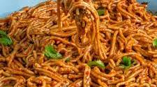

Spaghetti's Recipe

DESCRIPTION
Spaghetti is a long, thin, solid, cylindrical pasta. It is a staple food of traditional Italian cuisine.
Like other pasta, spaghetti is made of milled wheat, water, and sometimes enriched with vitamins and minerals.
INGREDIENTS
- Spaghetti
- Red bell pepper, tomatoes, scotch bonnet and onions
- garlic
- Ginger
- Chicken broth
- veggies
STEPS
- Blend bell pepper, scotch bonnet, tomatoes, and onion until smooth.
- Sauté onion, garlic, and ginger in oil, then add tomato paste.
- Mix in blended sauce, spices, and broth, and bring to a boil.
- Add pasta and cook until al dente.
- Stir in vegetables, if using, and simmer for 2-3 minutes.
- Serve hot with protein and a side dish.